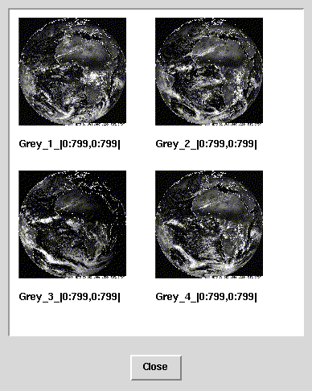

Accessing a Collection of Images
The basic unit of operation in RasQL are collections of images. This is
the equivalent to tables in SQL. To select all images in the collection
earth the following query can be used:
SELECT img
FROM earth AS img
The result of this query is a collection of images. The collectionearth
in the database we are using for this demonstration contains four images
of size 800x800 with a spatial domain of [0:799, 0:799]. The following
image shows thumbnails of the four retrieved MDD.

27-Feb-98